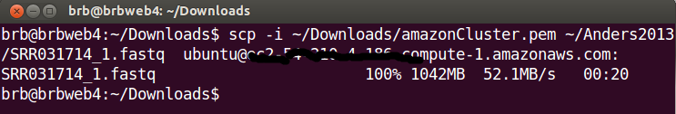

NIH Biowulf
Users are encouraged to check the NIH Biowulf User Guide if they run into any problems.
First of all, users should use /data/USERNAME directory to work on their data. This directory has a default quota size 100GB.
It is likely users need to request a larger quota to work with RNA-Seq data. The NIH Biowulf User Guide has a web interface
for users to fill out a form to request a larger quota.
To run a single job, users can use qsub command. The NIH Biwoulf User Guide tells users how to create a script file and how to run it.
Below we give a simple example to run tophat on one node.
$ freen
$ cat run_tophat.sh
#!/bin/bash
#PBS -N tophat
#PBS -m be
module load tophat
cd /data/USERNAME/GSE50491
tophat -p 6 -o RNA4_KO_BRD4 genome SRR960412_1.fastq SRR960412_2.fastq
$ qsub -l nodes=1:x2800 run_tophat.sh
$ qstat -u $USER
where the PBS directive -m will send an mail when the job begins ("b") and when it ends ("e").
You probably don't want to use -k option which will keep the STDOUT ("o")
and STDERR ("e") files in the user's home directory. The directive -N means the name of the batch job.
In the following example, I assume the working directory /data/USERNAME/GSE11209 contains sequence files and the necessary files
(*.gtf and *.bt2) to run the RNA-Seq preprocessing.
$ cd GSE11209
$ cat run_tophat_swarm.sh
cd /data/USERNAME/GSE11209; tophat2 -p 8 -o dT_bio genome SRR002062.fastq
cd /data/USERNAME/GSE11209; tophat2 -p 8 -o dT_tech genome SRR002064.fastq
cd /data/USERNAME/GSE11209; tophat2 -p 8 -o dT_ori genome SRR002051.fastq
cd /data/USERNAME/GSE11209; tophat2 -p 8 -o RH_bio genome SRR002058.fastq
cd /data/USERNAME/GSE11209; tophat2 -p 8 -o RH_tech genome SRR002061.fastq
cd /data/USERNAME/GSE11209; tophat2 -p 8 -o RH_ori genome SRR002059.fastq
$ freen
$ swarm -t 8 -g 12 --module tophat -f run_tophat_swarm.sh
$ jobload -m $USER
The swarm utility was created by NIH Biowulf team. It was designed to
simplify submitting a group of commands to the Biowulf cluster. To run the command,
users need to specify some parameters and one command file. The swarm utility contains a lot of command line options.
For example, the parameter -t specifies the number
of threads per process and -g denotes gigabytes per process. The --module tells what module
needs to be loaded. The -f parameter specifies the script file.
Note that Biowulf provides several combinations of processor, memory. It is wise to use freen command
to see a list of available nodes before running swarm.
In the command file, one command occupies one line. In the above example, we have 6 samples and tophat2 program will be run
6 times (one for each sample). When tophat is executed, we specify the number of threads by -p parameter.
After issuing swarm command, users can use jobload command
to monitor their jobs.
In the above example, swarm will allocate 3 nodes to run 6 jobs. Note that each process created from
swarm command will output 2 files; for example, sw3n16199.o (STDOUT) and sw3n16199.e (STDERR). Users can open the STDOUT file
to know how much memory and cpupercent were used.
$ cat sw3n16199.o
...
Show some job stats:
6675561.biobos elapsed time: 358 seconds
6675561.biobos walltime: 00:05:26 hh:mm:ss
6675561.biobos memory limit: 22.06 GB
6675561.biobos memory used: 1.08 GB
6675561.biobos cpupercent used: 339.00 %
housekeeping: p2407
------------- done PBS epilogue script -------------
Amazon Elastic Compute Cloud
Amazon Elastic Compute Cloud (Amazon EC2) is a web service that provides
resizable compute capacity in the cloud. It is designed to make web-scale computing easier for developers.
For new customers to Amazon Web Service, Amazon provides
750 hours of Linux and Windows Micro Instances each month for one year.
After creating AWS account, go to AWS console to view all Amazon Web Services. Click EC2 to go to EC2 Dashboard page.
Now follow the next few steps to create an instance
- Step 1: Click INSTANCES - Instances. Click blue 'Launch instance' button.
- Step 2: Choose an Amazon Machine Image (AMI). Click 'Select' button on Ubuntu Server 14.04
- Step 3: Choose an instance type. Select Micro instance and click 'Review and Launch' button.
- Step 4: We will be asked about key pair. Create a key pair name (eg amazonCluster) and click 'Download Key Pair'.
Use
chmod on command line to change the permission of this file to 400 or 600. The browser will automatically download
the file 'amazonCluster.pem' to your $HOME/Downloads directory. This file is needed when we use ssh command to connect
from our local machine to Amazon cloud machine. For more information about the EC2 key pair, check out
Amazon' instruction.
The t1 micro instance has only 613 MB memory and 8GB (up to 30GB) storage but it is free (for 1 year) and good enough for us to play around.
The term ECPU indicates the CPU performance
(one ECPU is approximately cpu of 1.0-1.2GHz 2007 Opteron or 2007 Xeon processor) and vCPU means the # of virtual CPUs.
But we don't use this t1 micro instance to run computing. We use this machine to create cluster of
computers. Write down the DNS or IP addresss of the new instance and use SSH/Putty to connect to the instance.
ssh -i ~/Downloads/amazonCluster.pem ubuntu@ec2-XX-XX-XX-XX.compute-1.amazonaws.com
Now don't log out. We are now ready to create a cluster of computers.
Issue the following commands.
$ sudo apt-get install python-setuptools
$ sudo apt-get update
$ sudo easy_install StartCluster
$ starcluster createkey mykey -o ~/.ssh/mykey.rsa
$ starcluster help
The screen will show up 3 options. You want to choose the 2nd one. At the end, it will create a configuration file under
/home/ubuntu/.starcluster/config. Run the following command to edit this configuration file.
$ nano ~/.starcluster/config
In this configuration file, we want to change a few places. Don't do anything extra unless you know what you do.
- AWS_ACCESS_KEY
- AWS_SECRET_KEY
- AWS_USER_ID
- KEY_LOCATION=~/.ssh/mykey.rsa
- keyname = mykey
- CLUSTER_SIZE = 2
- CLUSTER_USER = sgeadmin
- NODE_IMAGE_ID = ami-3393a45a
- NODE_INSTANCE_TYPE = t1.micro
- DISABLE_QUEUE=False
To create AWS_SECRETE_KEY, go to AWS Identity and Access Management (IAM) page.
Click Manage Users on the left panel. Create a new group of users. Use the group name 'clusterUser'. Click 'continue' and create
new users. Check the box of 'Generate an access key for each user'. Type a user name and click Continue. Make sure the user has EC2 or
adminstrator privilege. Now click 'Download Credentials' button. The screen will show the new user's Access Key ID and
Secret Access Key. Both keys will be used in the configuration file.
The AWS user/account ID is a 12-digit number, such as 1234-5678-9012.
It can be retrieved from IAM page as well.
Click Ctrl+o to save changes and Ctrl+x to exit the editor.
The above configuration will create one master virtual machine and one node. The files on each machine cannot be seen on the other.
The next step is to create EBS storage and attach it to each cluster computers.
There are two ways to create EBS volume. One is go to EC2 web site. Click on 'Volumes' and then click on 'Create Volume'.
You can also use command line to create volume. Below is a command to create a 20GB volume.
ubuntu@ip-172-31-16-93:~$ starcluster createvolume --name=data 20 us-east-1c
Now open the configuration file again and add
MOUNT_PATH = /data
This EBS volume will be automatically available to all the nodes. So if you create a file in one node, it will be available
from other nodes. Note that '/data' is not accessible except on clustering master/nodes.
ubuntu@ip-172-31-16-93:~$ starcluster start mycluster
ubuntu@ip-172-31-16-93:~$ starcluster listclusters
ubuntu@ip-172-31-16-93:~$ starcluster sshmaster mycluster
First, we download a bash script from Github. This script is used to install all necessary programs for
running RNA-Seq preprocessing.
root@master:~# wget https://raw.githubusercontent.com/arraytools/PreProcessGUI/master/install_rnaseq.sh
root@master:~# ./install_rnaseq.sh
The location of tophat, bowtie, et al is /opt/RNA-Seq/ which is not shared across nodes. So
we should repeat the above two lines on each node (Use ssh node001 to ssh to node001).
We first use winscp or rsync to transfer files from local to t1 micro instance. The transfer speed depends on the network bandwidth
on your current location and the amazon machines location.

Assuming we have transfer the folder called 'Anders2013medium' to the t1 micro instalce, we can
issue the following command to copy files to the EBS volume.
ubuntu@ip-172-31-16-93:~$ starcluster put mycluster Anders2013medium/*.fastq /data/Anders2013medium/
ubuntu@ip-172-31-16-93:~$ starcluster put mycluster Anders2013medium/*.bt2 /data/Anders2013medium/
ubuntu@ip-172-31-16-93:~$ starcluster put mycluster Anders2013medium/*.gtf /data/Anders2013medium/
ubuntu@ip-172-31-16-93:~$ starcluster put mycluster Anders2013medium/*.sh /data/Anders2013medium/
Now the tophat and required programs are ready and the sequence data including reference genome files are ready,
we are almost ready to run tophat in the cluster.
The startcluster includes
Sun Grid Engine (SGE) queuing system if we
set DISABLE_QUEUE=False in the configuration file. The SGE includes several queuing commands like qsub, qstat, qhost.
The qsub command can be used to launch one job in queue. We follow their instruction to create job scripts.
#!/bin/bash
export PATH=$PATH:/opt/RNA-Seq/bin/bowtie2-2.2.1
export PATH=$PATH:/opt/RNA-Seq/bin/tophat-2.0.11.Linux_x86_64
export PATH=$PATH:/opt/RNA-Seq/bin/samtools-0.1.19:/opt/RNA-Seq/bin/samtools-0.$
cd /data/Anders2013medium
tophat2 -p 1 -o Untreated-3 Dme1_BDGP5_70 file_1.fastq file_2.fastq
Note that we specify 1 thread to run tophat (-p 1) because the t1 micro machine has only 1 CPU. We can
choose an instance with up to 32 CPUs according to the
instance type matrix list.
Since we have 7 samples, we create 7 job scripts. Then we use qsub to assign jobs.
root@master:/data/Anders2013medium# qsub -V -b n -cwd run_tophat1.sh
root@master:/data/Anders2013medium# qsub -V -b n -cwd run_tophat2.sh
root@master:/data/Anders2013medium# qsub -V -b n -cwd run_tophat3.sh
root@master:/data/Anders2013medium# qsub -V -b n -cwd run_tophat4.sh
root@master:/data/Anders2013medium# qsub -V -b n -cwd run_tophat5.sh
root@master:/data/Anders2013medium# qsub -V -b n -cwd run_tophat6.sh
root@master:/data/Anders2013medium# qsub -V -b n -cwd run_tophat7.sh
We can use qstat command to monitor the job status.
The job status includes job ID, state, submit time and queue node name.
When qstat command does not give
any output, it means all jobs are finished. When qsub is used, any errors will be saved
to SCRIPTNAME.eXX and SCRIPTNAME.oXX will save the standard output. For tophat program,
it saves its output to STDERR. So if we see a lot of things in SCRIPTNAME.eXX, we can
safely ignore them. In other cases, we can use these files to debug.
Free Tier
Amazon provides one year of free tier to use several Amazon web services. There
are several limitations however. For example, the EBS service allows 30GB storage space, 2 million I/O (not many actually) and EC2 service
allows micro instance with 1GB memory on certain operation systems. Data transfer has a 15GB of bandwidth out aggregated across all AWS services.
After Free Tier
The Amazon EC2 web page contains several tables of prices for different platforms, hardware
requirement, and instance types. Note that the EC2 is not the only source of billing. The EBS storage used, data I/O are also part of monthly billing.
If we want to avoid being billed from EC2, we can stop the EC2 instance. If we don't need the instances anymore, we can
terminate instances.
The price of EBS service can be found on this page (region depending).
{kind=link}